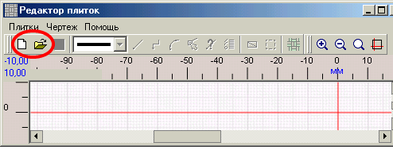
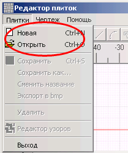
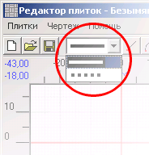
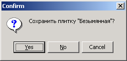

Открывается редактор плиток:

Чтобы рисовать плитку, надо либо ее создать (меню Плитки -> Новая ), либо открыть ее (меню Плитки -> Открыть ). Вместо меню можно пользоваться панелью инструментов. После этого разблокируются пункты меню и кнопки на панели инструментов.

Контур плитки рисуется мышкой на чертеже. Контур может состоять из графических элементов - отрезков, ломаных линий и дуг. Как их рисовать подробно описано в разделе Черчение графических объектов.
|
Важно! При рисовании плитки доступны два типа линий - сплошная и точечная. Выбираются из раскрывающего списка на панели инструментов.
 Внешний контур плитки должен быть нарисован сплошной линией. |
Нарисованные графические элементы можно изменять. Кнопка Список графических элементов
В конце работы надо сохранить плитку через меню или кнопку

Надо ввести название:
Подробнее о рисовании плиток см. Редактор плиток. Предположим, для пробы мы нарисовали прямоугольник со сторонами 200x100 мм.
Теперь можно переходить ко второму этапу - сложить из плитки узор.